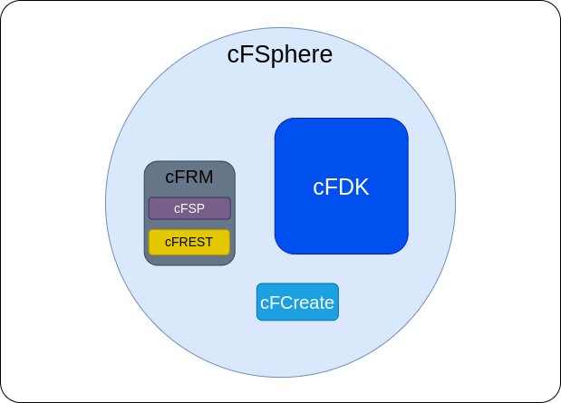

4. The cloudFPGA Sphere¶
The cloudFPGA Sphere or cFSphere is what constitutes the core of a cloudFPGA system. It is composed of several software components, each of them being provided as a standalone cF repository.
{kind=link}
The cloudFPGA Development Kit (cFDK) provides all the design files that are necessary to instantiate a cloudFPGA SHELL once a Shell-Role architecture has been chosen by the user.
The cFDK is provided as a cloudFPGA repository (cFDK Repo) and the documentation of its API is available in Doxygen style (cFDK Dox)
The cloudFPGA Resource Manager (cFRM) is a software component for acquiring, distributing, configuring and operating our stand-alone network-attached FPGAs in the DC infrastructure. This is a complex 3-tier hierarchical architecture [Ringlein-2019] for which we provide the following two RESTful web APIs for a user to interact with:
The cloudFPGA Support Package (cFSP) is a software library for accessing the control and the data path of a cloudFPGA instance. The cFSP is provided as a cloudFPGA repository (cFSP Repo).
The cloudFPGA REST (cFREST) is a graphical web API for the user to access the features provided by the cFRM. This API is available as a Swagger UI with a look and feel similar to this screenshot.
The cloudFPGA Create (cFCreate) is a framework to assist a user during the creation and the update of a cloudFPGA project. It is also provided as a cloudFPGA repository (cFCreate Rep)
{kind=link}
For more information on these components, please visit the documentation of the corresponding repositories.
- 4.1. cFDK
- 4.2. cFCreate
- 4.3. cFSP
- 4.3.1. Requirements
- 4.3.2. Installation
- 4.3.3. Getting Started
- 4.3.3.1. Contents
- 4.3.3.2. Getting help
- 4.3.3.3. Setting up the credentials file for a user
- 4.3.3.4. Show the credentials of a user
- 4.3.3.5. Load new credentials for a user
- 4.3.3.6. Upload an image
- 4.3.3.7. Upload an image for partial reconfiguration
- 4.3.3.8. Get an image
- 4.3.3.9. Create a cluster
- 4.3.3.10. Create a multi-node cluster
- 4.3.3.11. Update the nodes of a cluster
- 4.3.3.12. Get a cluster
- 4.3.3.13. Extend a cluster
- 4.3.3.14. Reduce a cluster
- 4.3.3.15. Restart a cluster
- 4.3.3.16. Debug a cluster
- 4.3.3.17. Delete a cluster
- 4.3.3.18. Create an instance
- 4.3.3.19. Get an instance
- 4.3.3.20. Restart an instance
- 4.3.3.21. Debug an instance
- 4.3.3.22. Delete an instance
- 4.3.3.23. Debug using the flight recorder data
- 4.3.3.24. Use cFSP as a Python module
- 4.3.4. Update of the python Python API